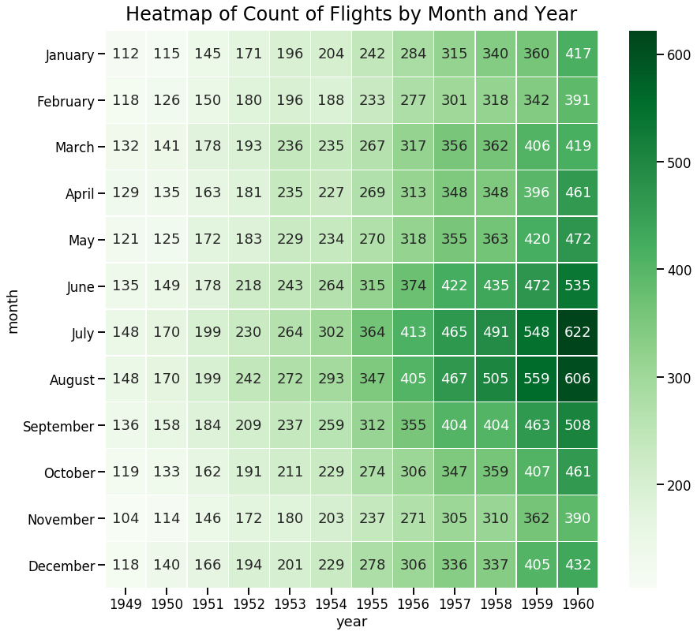

When to Use Heatmaps
- June 14, 2018 • 3 min read
- Key Terms: heatmaps
Heatmaps are great for visualizing table-like data with variations in coloring.
If you're unfamiliar with heatmaps, please scroll down to see an example.
Heatmaps help reveal patterns of similar values next to one another based on their color.
I'll illustrate a few examples of heatmaps below.
Import Modules
import seaborn as sns
import matplotlib.pyplot as plt
import pandas as pd
from datetime import date
% matplotlib inline
Example: Heatmap of Bike Rides by Day of Week and Hour of Day
In the San Francisco Bay Area, a company Motivate operates a network of bikes across several cities. You can walk up to a bike, pay and unlock it from a dock, ride it to your destination, and park it in another nearby dock.
For each ride, Motivate records data on the start time, end time and more.
I'm curious to see riding patterns by day of week and hour of day. Are they different or similar?
Acquire Data and Organize for Heatmap Visualization
Read in CSV.
df = pd.read_csv('201805-fordgobike-tripdata.csv')
Preview data
df[['duration_sec', 'start_time', 'end_time']].head()
| duration_sec | start_time | end_time | |
|---|---|---|---|
| 0 | 56791 | 2018-05-31 21:41:51.4750 | 2018-06-01 13:28:22.7220 |
| 1 | 52797 | 2018-05-31 18:39:53.7690 | 2018-06-01 09:19:51.5410 |
| 2 | 43204 | 2018-05-31 21:09:48.0150 | 2018-06-01 09:09:52.4850 |
| 3 | 67102 | 2018-05-31 14:09:54.9720 | 2018-06-01 08:48:17.8150 |
| 4 | 58883 | 2018-05-31 16:07:23.8570 | 2018-06-01 08:28:47.2020 |
Convert start_time field into a datetime type with new field name called start_time_datetime
df['start_time_datetime'] = pd.to_datetime(df['start_time'])
Keep records of rides only before May 29th so we have the same number of occurrences for all days of the week.
df = df[df['start_time_datetime']<date(2018, 5, 29)]
Make new column start_time_day_name to be the day name of start of the ride such as Saturday.
df['start_time_day_name'] = df['start_time_datetime'].dt.weekday_name;
Make new column start_time_hour for the start time hour of rides.
df['start_time_hour'] = df['start_time_datetime'].dt.hour;
Make new dataframe df_rides_day_hour2 to pivot our data and by day and hour, get the count of rides.
df_rides_day_hour2 = pd.pivot_table(df[['start_time_day_name', 'start_time_hour', 'duration_sec']], index=['start_time_day_name', 'start_time_hour'], aggfunc='count')
Unstack below puts days on the x-axis and hour of day on the y-axis.
df_rides_day_hour3 = df_rides_day_hour2.unstack(level=0)
Re-index axis so day of week appears in logical progression.
df_rides_day_hour3 = df_rides_day_hour3.reindex_axis(labels=['Monday', 'Tuesday', 'Wednesday', 'Thursday', 'Friday', 'Saturday', 'Sunday'], axis=1, level=1)
Create new axis tick labels for easy to read hours and days of the week.
morning_hours = []
for hour in range(1, 12):
detailed_hour = str(hour) + "am"
morning_hours.append(detailed_hour)
afternoon_hours = []
for hour in range(1, 12):
detailed_hour = str(hour) + "pm"
afternoon_hours.append(detailed_hour)
detailed_hours = ["12am"] + morning_hours + ["12pm"] + afternoon_hours
day_short_names = ['Mon', 'Tues', 'Wed', 'Thurs', 'Fri', 'Sat', 'Sun']
Plot Heatmap of Ride Counts by Day and Hour of Day
sns.set_context("talk")
f, ax = plt.subplots(figsize=(11, 15))
ax = sns.heatmap(df_rides_day_hour3, annot=True, fmt="d", linewidths=.5, ax=ax, xticklabels=day_short_names, yticklabels=detailed_hours)
ax.axes.set_title("Heatmap of Ride Counts by Day and Hour of Day", fontsize=24, y=1.01)
ax.set(xlabel='Day of Week', ylabel='Starting Hour of Ride');

Interpretation of Heat Map of Rides
On weekdays, Monday to Friday, most rides are taken during typical commuting hours, from 7am to 9am and 4pm - 7pm.
On weekends, there's fairly consistent amount of rides per hour from 11am - 6pm.
Example: Heatmap of Flights By Month and Year
The Seaborn visualization library provides an example dataset of the count of flights per month over the years 1949 to 1960. I want to easily visualize this data and see if there are any patterns.
Acquire the Flights Dataset
flights_long = sns.load_dataset("flights")
Pivot the Data to Heatmap Format
flights = flights_long.pivot("month", "year", "passengers")
Draw a Heatmap of Flight Counts by Month and Year
f, ax = plt.subplots(figsize=(14, 13))
sns.heatmap(flights, annot=True, fmt="d", linewidths=.5, ax=ax, cmap="Greens")
ax.axes.set_title("Heatmap of Count of Flights by Month and Year", fontsize=24, y=1.01);

Interpret Heatmap of Flights Over Time
Over the years, there's a trend towards more flights by month.
The most frequent flight months of any year are typically July and August.